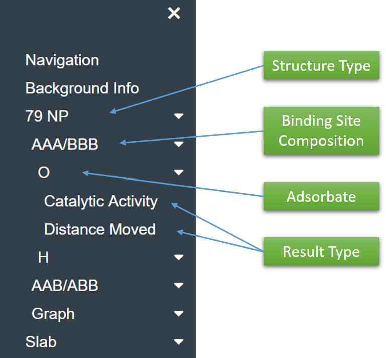

Use the dropdown menu to navigate to the desired combination of the following fields: Structure Type, Binding Site Composition, Adsorbate, and Result Type.

Structure Type
The two structure types explored for the catalyst are reflected here: a 79-atom nanoparticle (79 NP) and the bulk material (Slab).
Adsorbate
The two adsorbates explored for the fuel cell are reflected here: oxygen (O) for ORR and hydrogen (H) for HER.
Binding Site Composition
AAA/BBB and AAB/ABB
The tables are set up so that the primary metal (A) is on the x-axis and the secondary metal (B) is on the y-axis. The 3-atom hollow binding site composition can then be read
as a concatenation of the respective metals (e.g. AAB would be 2 of metal A, 1 of metal B).
Result Type
Catalytic Activity
The table reflects the catalytic activity for each site based on the volcano plots listed in the background info page, with a gradient key listed on the right. The green cells indicate
overbinding, while the yellow indicates underbinding. A darker color indicates a more ideal activity level.
A tooltip appears when a cell is hovered over, displaying various information such as the observed and predicted binding energies in eV, the original binding site and alloy, and standard
deviation of the observed binding energy.
Distance Moved
This data is used to display the average distance an adsorbate moved from its initial position in the 3-atom hollow site and if it moved to a bridge, top, or another hollow site. The color
represents the mode of the site movements.
For example, on the 79 NP AAB/ABB H Distance Moved table, the green AgPt indicates that a majority of the 5 runs optimized to the top site. Hovering over the square provides more information:
the Pt top site was preferred 4 times, while the AgPt bridge site was preferred the other time. Thus, it can be reasonable to assume that the AgAgPt hollow site is unstable/less stable than
the surrounding sites.
Graph
There is a dynamic graph located at the bottom of the webpage. By default, an ideal oxygen binding energy (OBE) line and ideal hydrogen binding energy (HBE) line are displayed.
These are able to be added/removed by clicking the respective cell on the top right. The clear button will clear everything but the ideal lines on the graph.
When the graph result type is selected, a table of gray cells appears. These cells are able to be selected and unselected for both the binding energy and distance moved result
types, which will also add data to the graph.
Result Type
Binding Energy
Selecting a cell displays a line graph representing the respective average binding energies for each possible hollow site combination. The linearity of the graph reflects the
tunability of the material. Upon hovering over, each data point displays the binding energy, accurate to 4 decimal points.
Distance Moved
Selecting a cell displays a bar graph representing the average adsorbate distance moved at each possible hollow site combination. This option is complementary to the binding
energy graph. If, when analyzing tunability, an anomaly is observed, the distance moved graph can indicate whether the adsorbate moved sites or not.
NOTE: This webpage is currently incompatible with Microsoft Edge. Please switch to Google Chrome, Mozilla Firefox, or any other browser that supports JavaScript in order to view the rest of the database.
It is essential to promote alternative energy sources as our energy demands to increase. Our research aims to improve the viability of hydrogen
fuel cells via high-throughput computation of materials candidates for catalysis. We performed density functional theory calculations to optimize randomly-ordered
bimetallic 79-atom nanoparticles and slabs. We use the well-defined relation between binding energy of metallic materials to oxygen and hydrogen to their catalytic ability
for the oxygen reduction and hydrogen evolution reactions. From there, we can make conclusions about promising catalytic materials from our calculated binding energies
reported here.
Findings reported here also include the distance the adsorbate moved from the original three-fold hollow site, which when considered in the differences
between predicted and observed binding energies, can explain deviations from our predictions. A useful tool in this database is the 'Graph' functionality, which allows
plotting of binding energies and/or adsorbate movement distances across the four site compositions for a particular alloy. This can then be used, for example, to observe
whether one of our materials is tunable and, if not, what sites correlated to adsorbate movement.